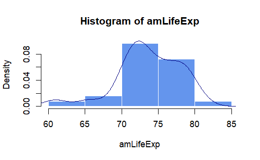
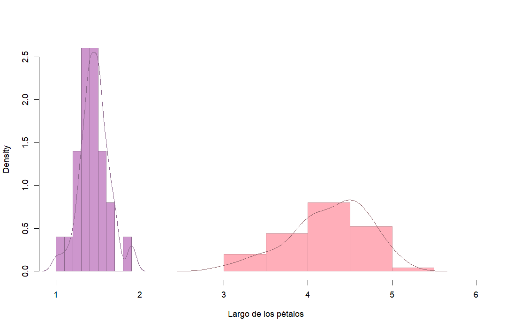
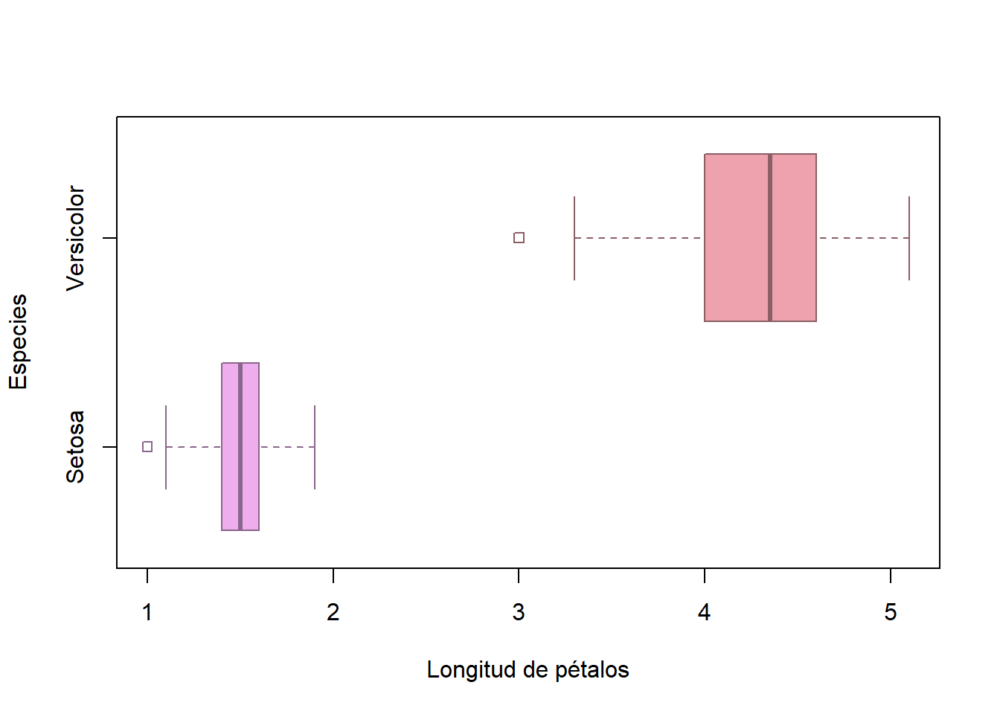

En esta lección aprederemos acerca de las pruebas estadísticas de t de Student:) Este tipo de pruebas nos permite comparar si existen diferencias significativas entre dos o más medias muestrales (t de Student y ANOVA, respectivamente).
Este curso no es acerca de estadística por lo cual no se revisarán los aspectos teóricos sino más bien los elementos prácticos de las pruebas estadísticas. Se ha planteado mostrar las herramientas en R que nos permiten hacer estas pruebas las cuales usualmente son utilizadas aún por algunas licenciaturas en la UNAM.
Antes de comenzar primero debemos recordar que las pruebas estadísticas que veremos se basan en el contraste de pruebas de hipótesis. De forma muy simplificada, tenemos una Hipótesis nula que indica que no existen diferencias entre nuestras muestras y una Hipótesis alternativa que establece que sí las hay (ejemplo: que no sean iguales, que una sea mayor a la otra o una sea menor). Segundo, cualquiera que sean nuestro conjunto de datos, éstos siguen un tipo de distribución de probabilidad. En el caso de la t de Student (prueba de t) y ANOVA se asume que siguen una distribución normal (de campana). Para realizar nuestras pruebas tendremos que definir nuestro juego de hipótesis.
Un ejemplo en el cual definimos nuestras hipótesis: Se quiere conocer si el diámetro promedio de los árboles de Ceiba pentandra en el bosque tropical del sur de México difiere del promedio mundial de la especie. Si conocemos el diámetro promedio de mi población en el sur de México y del promedio mundial entonces establecemos lo siguiente.
H0: \(\bar{x}= \mu\) (El diámetro promedio no cambia (es igual del promedio mundial)
Ha: \(\bar{x} \neq \mu\) (El diámetro promedio es diferente del promedio mundial)
Una vez declaradas nuestras hipótesis nos fijaremos en dos valores importantes:
La prueba de t de Student se utiliza para comparar las medias de dos muestras. Esta prueba supone normalidad en los datos y existen varios tipos de pruebas.
| Prueba de t | Objetivo |
|---|---|
| De una muestra | Determinar si la media de la población es igual o no que un valor específico |
| De dos muestras independientes | Determinar si las medias de la población tienen diferencias significativas (diferentes, “>” o “<”) |
| De muestras dependientes | Determinar si la media de la población es igual o diferente después de un tiempo \(\mu1 \neq \mu2\) |
Para la práctica usaremos los datos de Gapminder
la cual es una organización que se dedica a desafiar percepciones
erróneas sobre el desarrollo global y utiliza datos para proporcionar
una comprensión más precisa de las tendencias mundiales.Por lo que
permite el acceso a datos e información estadística a nivel global. En R
está disponible como la librería gapminder.
# Instalar el paquete si no está instalado
if (!requireNamespace("gapminder", quietly = TRUE)) {
install.packages("gapminder")
}# Cargar el paquete
library("gapminder")
# Cargar los datos de Gapminder
gapm <- gapminder
summary(gapm)## country continent year lifeExp
## Afghanistan: 12 Africa :624 Min. :1952 Min. :23.60
## Albania : 12 Americas:300 1st Qu.:1966 1st Qu.:48.20
## Algeria : 12 Asia :396 Median :1980 Median :60.71
## Angola : 12 Europe :360 Mean :1980 Mean :59.47
## Argentina : 12 Oceania : 24 3rd Qu.:1993 3rd Qu.:70.85
## Australia : 12 Max. :2007 Max. :82.60
## (Other) :1632
## pop gdpPercap
## Min. :6.001e+04 Min. : 241.2
## 1st Qu.:2.794e+06 1st Qu.: 1202.1
## Median :7.024e+06 Median : 3531.8
## Mean :2.960e+07 Mean : 7215.3
## 3rd Qu.:1.959e+07 3rd Qu.: 9325.5
## Max. :1.319e+09 Max. :113523.1
## Estamos en el 2007 y estamos realizando un estudio para conocer la esperanza de vida de la población de América Una vez que muestreamos arduamente queremos conocer si la esperanza de vida promedio de lxs asiáticos es igual a la de la población mundial. En ese momento la esperanza de vida mundial promedio era de 70 años, según datos del Banco Mundial. Declaramos nuestras hipótesis:
HO : La esperanza de vida de lxs americanxs es igual al promedio mundial. Ha: La esperanza de vida de lxs americanxs es diferente del promedio mundial.
# Seleccionamos los datos de América
amLifeExp <- gapm$lifeExp[gapm$continent == "Americas" & gapm$year == 2007]Esta prueba asume normalidad de los datos, por lo que usamos la
función shapiro.test() y nos fijamos que el valor de
p sea mayor a 0.05, ya que esta prueba asume como hipótesis
nula (HO) que los datos se distribuyen de manera normal.
(amNorm <- shapiro.test(amLifeExp))##
## Shapiro-Wilk normality test
##
## data: amLifeExp
## W = 0.93431, p-value = 0.1093Una forma visual de tratar de saber si nuestros datos cumplen el supuesto de normalidad es un histograma y un gráfico de densidad.
hist(amLifeExp,
freq = F, # Al colocar False se dibuja con las densidades de probabilidad
col = "cornflowerblue", border = F)+
lines(density(amLifeExp), col = "navy")
Para realizarla usamos la función t.test(), en este caso
debemos especificar la media con la que queremos comparar (70 años).
(amt.test1group <- t.test(amLifeExp,
mu = 70, # Valor de comparación
alternative = "two.sided" # Tipo de Ha
))##
## One Sample t-test
##
## data: amLifeExp
## t = 4.0623, df = 24, p-value = 0.0004501
## alternative hypothesis: true mean is not equal to 70
## 95 percent confidence interval:
## 71.77499 75.44125
## sample estimates:
## mean of x
## 73.60812Para calcular el estadítico t usamos la siguiente función:
# t.teorico. Prueba de dos colas
qt(p = 0.025, # Probabilidad
df = length(amLifeExp)-1,# grados de libertad: tamaño de la muestra menos 1
)## [1] -2.063899qt(p = 0.975, # Probabilidad
df = length(amLifeExp)-1) # grados de libertad## [1] 2.063899Si el estadístico observado (t) es diferente del t.teórico y el valor de p es menor a 0.05 quiere decir que la prueba es significativa y podemos rechazar la HO, es decir, la esperanza de vida de lxs americanxs es diferente del promedio mundial.
Somos botánicxs y después de nuestro trabajo de campo recopilamos datos de Iris spp.. Nosotrxs queremos saber si la longitud de los pétalos de la especie Iris setosa son en promedio de mayor tamaño que las de I. versicolor. Por lo tanto Declaramos nuestras hipótesis:
HO : La longitud de los pétalos de la especie Iris setosa NO son en promedio más grandes que las de I. versicolor. Ha: La longitud de los pétalos de Iris setosa SON en promedio mayores que las de I. versicolor.
# Preparamos los datos
head(iris)## Sepal.Length Sepal.Width Petal.Length Petal.Width Species
## 1 5.1 3.5 1.4 0.2 setosa
## 2 4.9 3.0 1.4 0.2 setosa
## 3 4.7 3.2 1.3 0.2 setosa
## 4 4.6 3.1 1.5 0.2 setosa
## 5 5.0 3.6 1.4 0.2 setosa
## 6 5.4 3.9 1.7 0.4 setosasetosaPetalL <- iris$Petal.Length[iris$Species =="setosa"]
versicolorPetalL <- iris$Petal.Length[iris$Species =="versicolor"]Esta prueba asume normalidad de los datos, por lo que usamos la
función shapiro.test() y nos fijamos que el valor de
p sea mayor a 0.01, ya que esta prueba asume como hipótesis
nula (HO) que los datos se distribuyen de manera normal.
(setosaNorm <- shapiro.test(setosaPetalL))##
## Shapiro-Wilk normality test
##
## data: setosaPetalL
## W = 0.95498, p-value = 0.05481(versicolorNorm <- shapiro.test(versicolorPetalL))##
## Shapiro-Wilk normality test
##
## data: versicolorPetalL
## W = 0.966, p-value = 0.1585Para ver su distribución:
hist(setosaPetalL, freq = F,
main = " ", xlab = "Largo de los pétalos",
col = "plum3", border = "plum4",
xlim = c(1,6))+
hist(versicolorPetalL,
add = T, # El argumento add nos pemrite superponerlos
freq = F, col = "lightpink1",
border = "lightpink3")
lines(density(setosaPetalL), col = "plum4")
lines(density(versicolorPetalL), col = "lightpink4")
También podemos compararlas visualmente con on boxplot:
boxplot(setosaPetalL, versicolorPetalL,
ylab = "Especies",
xlab= "Longitud de pétalos",
col = c("plum2", "lightpink2"),
border = c("plum4", "lightpink4"),
outpch = 22,
horizontal = T,
names = c("Setosa", "Versicolor"))
Además esta prueba asume igualdad de varianzas por lo que usamos la
función leveneTest(). Si el valor de p > 0.05 podemos
considerar igualdad de varianzas.
library(car)## Loading required package: carDataleveneTest(setosaPetalL,
versicolorPetalL)## Warning in leveneTest.default(setosaPetalL, versicolorPetalL): versicolorPetalL
## coerced to factor.## Levene's Test for Homogeneity of Variance (center = median)
## Df F value Pr(>F)
## group 18 1.1053 0.3918
## 31var.test(setosaPetalL,
versicolorPetalL)##
## F test to compare two variances
##
## data: setosaPetalL and versicolorPetalL
## F = 0.13658, num df = 49, denom df = 49, p-value = 1.026e-10
## alternative hypothesis: true ratio of variances is not equal to 1
## 95 percent confidence interval:
## 0.07750613 0.24068043
## sample estimates:
## ratio of variances
## 0.1365804(setosaVersicolorPetal_L <- t.test(setosaPetalL,
versicolorPetalL, # Valor de comparación
alternative = "greater",# Tipo de Ha
var.equal = F # Varianzas iguales o no
))##
## Welch Two Sample t-test
##
## data: setosaPetalL and versicolorPetalL
## t = -39.493, df = 62.14, p-value = 1
## alternative hypothesis: true difference in means is greater than 0
## 95 percent confidence interval:
## -2.916299 Inf
## sample estimates:
## mean of x mean of y
## 1.462 4.260Por lo tanto, no rechazamos la HO: La longitud de los pétalos de la especie Iris setosa NO son en promedio más grandes que las de I. versicolor.
Esta prueba nos permite saber si la media muestral es igual, menor o mayor después de un tratamiento o tiempo. Por ejemplo, la esperanza de vida promedio en América en 2002 será mayor o menor cinco años después?
HO : La esperanza de vida de lxs americanxs en 2002 no es mayor que la del promedio cinco años después. Ha: La esperanza de vida promedio de lxs americanxs en 2002 es mayor cinco años después.
# Seleccionamos los datos
amLifeExp2002 <- gapm$lifeExp[gapm$continent == "Americas" & gapm$year == 1992]
amLifeExp2007 <- amLifeExp
# Comprobamos normalidad
(amNorm <- shapiro.test(amLifeExp2002))##
## Shapiro-Wilk normality test
##
## data: amLifeExp2002
## W = 0.94801, p-value = 0.226# Comprobamos homogeneidad de varianzas
var.test(amLifeExp2002,
amLifeExp2007)##
## F test to compare two variances
##
## data: amLifeExp2002 and amLifeExp2007
## F = 1.3538, num df = 24, denom df = 24, p-value = 0.4636
## alternative hypothesis: true ratio of variances is not equal to 1
## 95 percent confidence interval:
## 0.5965619 3.0720667
## sample estimates:
## ratio of variances
## 1.353764# Se cumplen los supuestos#" Hacemos la prueba
t.test(amLifeExp2007, amLifeExp2002,
paired = T,
alternative = "greater"
)##
## Paired t-test
##
## data: amLifeExp2007 and amLifeExp2002
## t = 12.082, df = 24, p-value = 5.426e-12
## alternative hypothesis: true mean difference is greater than 0
## 95 percent confidence interval:
## 3.467711 Inf
## sample estimates:
## mean difference
## 4.03976Por lo tanto podemos afirmar que la esperanza de vida promedio en América fue mayor cinco años después.
En el caso de que nuestros datos no se cumplan el supuesto de
normalidad podemos usar una prueba no paramétrica. Esta prueba en lugar
de evaluar diferencias en las medias muestrales utiliza la mediana. La
función es wilcox.test() y usa los mismos argumentos que
t.test()
#Prueba no paramétrica pareada
wilcox.test(despues.prom, antes.prom,
alternative = "two.sided",
paired = T
)